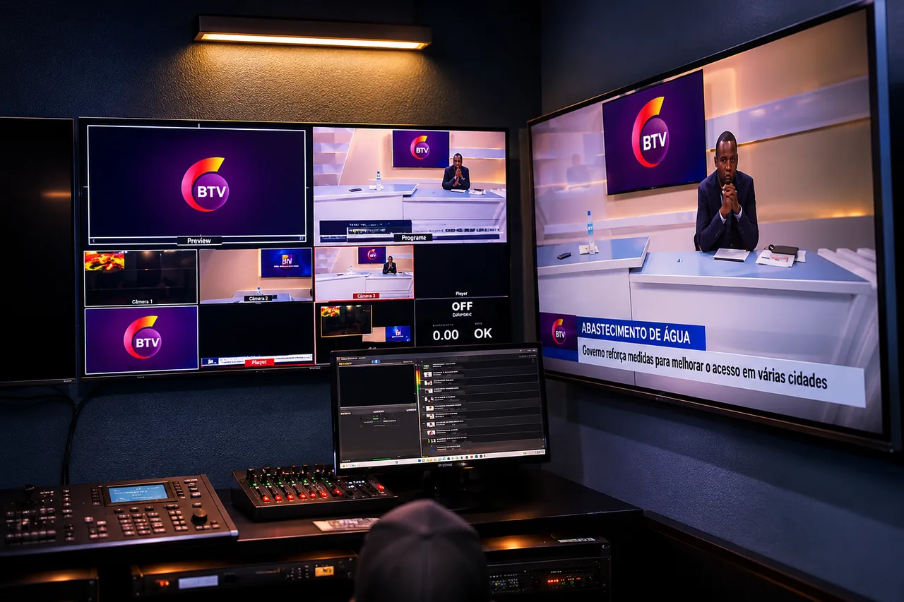

BTV News
Notícias e os principais acontecimentos da actualidade.

A tua televisão, onde estiveres. Acompanha a emissão em directo e descobre os teus programas favoritos.
A tua televisão, onde estiveres.
Notícias e os principais acontecimentos da actualidade.

Informação, convidados e temas do quotidiano para começar o dia.

Actualidade e acompanhamento dos acontecimentos que marcam o país.

Futebol, resultados e análise desportiva.

Direitos, deveres e esclarecimentos jurídicos para o dia-a-dia.

Talento, personalidades e entretenimento.

Histórias de amor, celebrações e memórias de casamento.

Arte, cultura e criatividade sem fronteiras.
A BTV (Bawito TV) é uma estação televisiva generalista de âmbito nacional e internacional, dedicada à promoção da cultura, da arte, do entretenimento e da identidade moçambicana.
Moderna, inclusiva e multiplataforma, combina a transmissão televisiva tradicional com a inovação digital, aproximando Moçambique do mundo.
Garantir a diversidade da programação, levando as melhores produções e expressões culturais do mundo aos lares moçambicanos.
Ligar Moçambique ao ecossistema global, projectando a nossa cultura, os nossos talentos e as nossas histórias para o mundo.
À frente da BTV, lidera a sua aposta na valorização da cultura moçambicana, na diversidade da programação e na inovação televisiva e digital.
É aqui que a informação, a cultura e o entretenimento ganham vida. Conheça os espaços e os bastidores da nossa produção televisiva.

O espaço dedicado à actualidade e aos conteúdos informativos.

Um cenário versátil para diferentes formatos televisivos.

Câmaras, iluminação e equipamentos ao serviço dos nossos programas.

Nos bastidores, onde se coordena a produção e a emissão.
Imagens dos espaços com tratamento visual assistido por inteligência artificial.